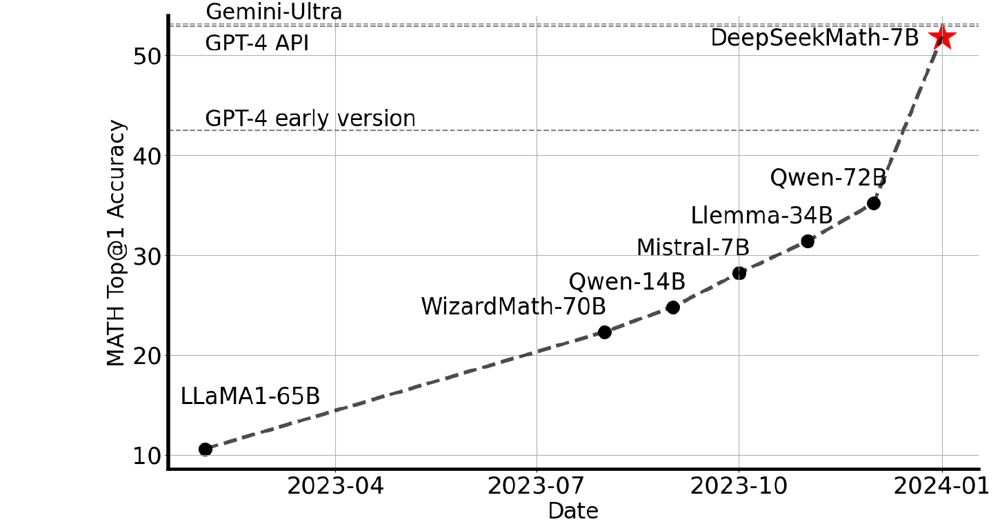
Shao et al. (2024) train DeepSeekMath-RL 7B, which reaches 51.7% Top-1 accuracy on the competition-level MATH benchmark — no tools, no voting — approaching GPT-4 and Gemini-Ultra, and far ahead of every other open 7B–70B model. Two contributions explain this: a meticulously engineered pretraining corpus, and GRPO — the RL algorithm this paper introduces, later used to train DeepSeek-R1.
120B math tokens mined from Common Crawl via an iterative classifier pipeline — 2.3× larger than any prior public math pretraining corpus.
Group Relative Policy Optimization — a lighter-weight alternative to PPO that drops the value model entirely, introduced here and used unchanged in DeepSeek-R1.
The paper also reframes SFT, RFT, DPO, PPO, and GRPO as one family of algorithms differing in just three choices — useful for the whole rest of this deck.
DeepSeekMath-Base 7B starts from DeepSeek-Coder-Base-v1.5, not a general LLM — a deliberate choice this deck returns to later.
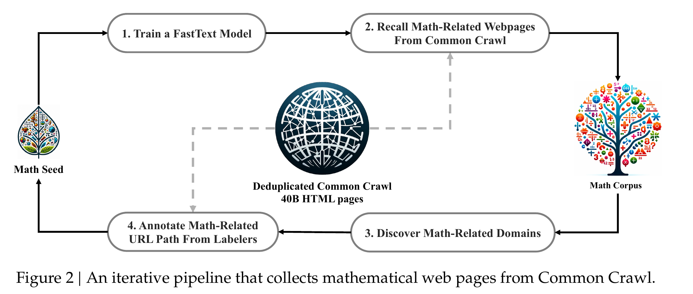
Four stages, repeated in a loop: (1) train a fastText classifier on a seed corpus, (2) use it to recall math-like pages from Common Crawl, (3) find whole domains where recall was high (e.g. mathoverflow.net), (4) have human annotators mark the specific math-related URL paths within those domains — which then enlarge the seed corpus for the next round.
A classifier trained once on a small, narrow seed set (OpenWebMath) only recognizes pages that look like that seed set — it misses math content in a different style or domain entirely. The fix is to let the classifier's own blind spots point to where to look next.
Checking every one of 40B pages by hand is impossible. But if >10% of a
domain's pages were already recalled, that whole domain is very likely
math-related — annotators only need to mark the URL patterns worth keeping (e.g.
mathoverflow.net/questions), and every matching page is added at once. This
converts millions of individual judgments into a handful of domain-level ones.
After 4 iterations: 35.5M web pages, 120B tokens — nearly 9× the size of OpenWebMath (120.2B vs. 13.6B tokens, verified). Iteration 4 was stopped because 98% of its pages were already found in iteration 3 — the seed corpus had converged.
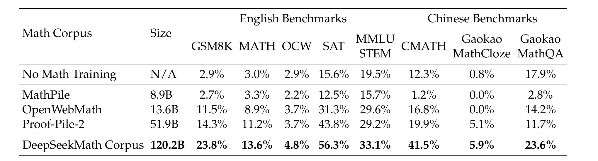
Same 1.3B model, same 150B training tokens, only the corpus changes. The DeepSeekMath Corpus wins on every single benchmark — including the Chinese ones (CMATH, Gaokao), where English-only corpora like Proof-Pile-2 barely help at all, since this corpus was deliberately built to be multilingual.
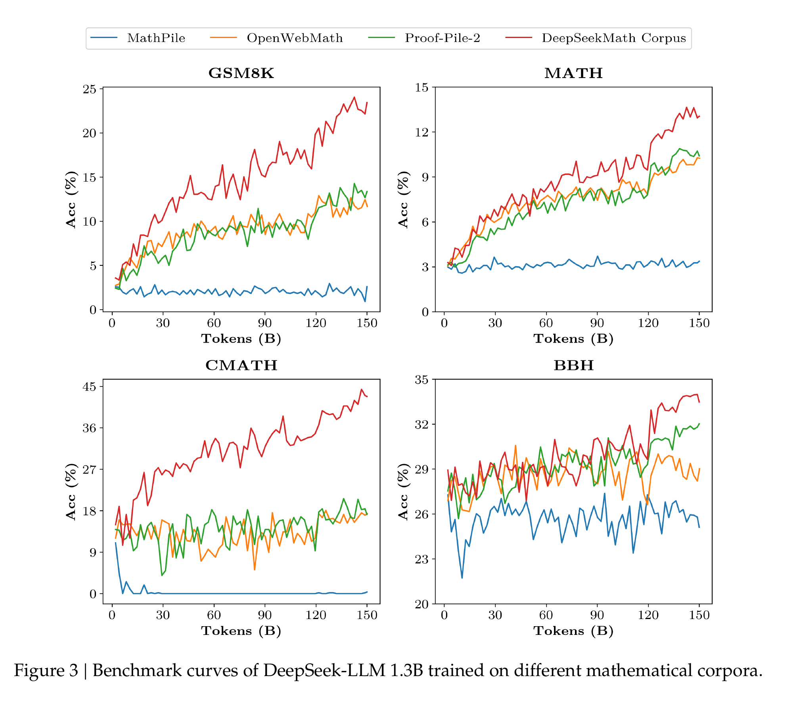
MathPile and OpenWebMath are so much smaller that 150B tokens means repeating them many times — performance plateaus fast. The DeepSeekMath Corpus is large enough that the model is still seeing mostly new text late into training, so the curve keeps climbing instead of flattening.
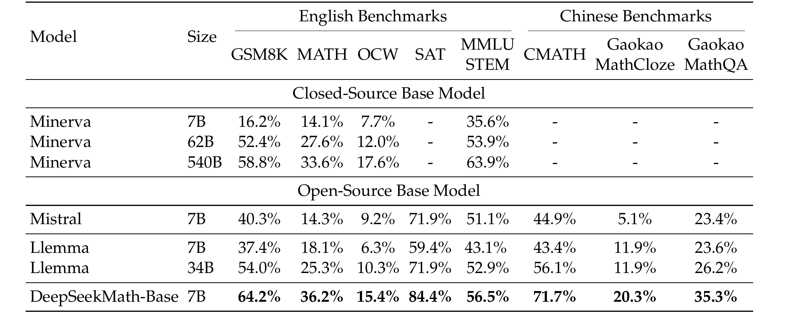
DeepSeekMath-Base 7B beats every open baseline on all 8 benchmarks, and even outperforms Minerva 540B — a closed model 77× larger, built on PaLM and further trained on math text. Parameter count isn't the only lever; corpus quality is another.
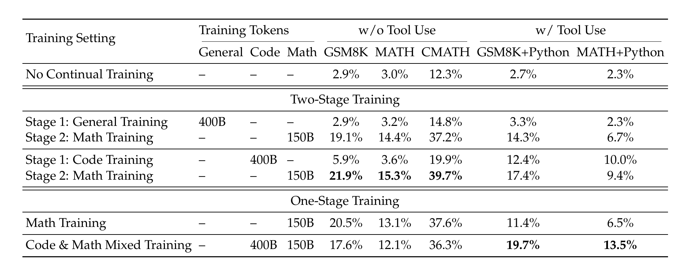
Same recipe, two different first stages: 400B tokens of code vs. 400B tokens of generic text, both followed by 150B tokens of math. Code-first wins on every column — GSM8K 21.9% vs. 19.1%, GSM8K+Python 17.4% vs. 14.3% — a controlled answer to "does code training help math reasoning," at least in this domain.
ArXiv papers are a standard ingredient in prior math corpora (Proof-Pile-2, Minerva, MathPile) on the assumption that formal mathematical writing teaches formal mathematical reasoning. Training DeepSeek-LLM 1.3B and DeepSeek-Coder-Base-v1.5 7B on arXiv-only corpora (MathPile, ArXiv-RedPajama) shows no improvement, and sometimes deterioration, across GSM8K, MATH, MMLU-STEM, and formal theorem proving (miniF2F).
The authors explicitly flag this as preliminary — untested at larger scale, and untested combined with other data types. A clearly-scoped negative result is still useful: it means "arXiv papers = better math reasoning" should not be assumed without evidence.
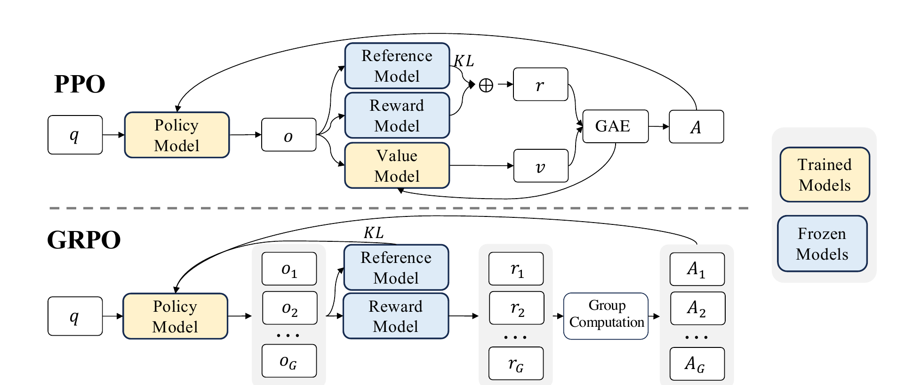
In PPO, the value model — another network roughly the size of the policy — estimates a baseline reward for variance reduction, and needs its own training. GRPO replaces it entirely with something free: sample several responses to the same prompt, and use their own group average as the baseline. No extra model, no extra training.
PPO's value model has to answer a hard, general question: "starting from this exact partial response, how good an outcome should I expect?" — for every token, for every prompt, requiring a trained predictor.
Instead of predicting what a good outcome looks like in the abstract, GRPO just generates several actual outcomes for the same prompt and compares them to each other. The value model's job — "what's a typical reward here?" — is answered empirically by the group itself, at zero extra training cost. This is only cheap because generating a few extra rollouts is far less expensive than training and running a second full-size model at every step.
The paper notes a second benefit: reward models are usually trained on comparisons between outputs to the same question in the first place — so grading rollouts relative to their own group matches how the reward signal was built.
$G$ — group size, the number of sampled responses per question $q$; $o_i$ — the $i$-th response, with $|o_i|$ tokens; $\pi_\theta,\pi_{\theta_{\text{old}}}$ — current and pre-update policy; $\hat A_{i,t}$ — group-relative advantage (next slide); $\varepsilon$ — clip range; $\beta$ — KL penalty strength against a fixed reference policy $\pi_{ref}$.
This is token-level clipping — unlike DeepSeek-R1's later simplification to one ratio per whole response — and the KL term is added directly to the loss, not folded into the reward as PPO does.
$\mathbf r=\{r_1,\dots,r_G\}$ — rewards for the whole group; every token in response $o_i$ gets the same advantage $\hat A_{i,t}$ under outcome supervision (one reward per full response). The KL formula is an unbiased estimator (Schulman, 2020) guaranteed to be non-negative — unlike a naive log-ratio, it can't accidentally reward the policy for drifting from the reference.
SFT, RFT, DPO, PPO, and GRPO all turn out to be the same equation — the only differences are: where the training data $(q,o)$ comes from (the data source), and how strongly each token gets pushed up or down (the gradient coefficient $GC$). Everything from here is just filling in these two blanks differently.
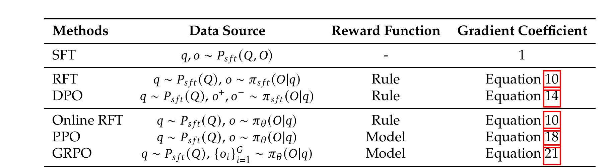
SFT has a fixed coefficient of 1 — every human-written token is pushed equally hard, unconditionally. RFT/Online RFT use a binary indicator — 1 if the sampled answer was correct, 0 otherwise; no notion of "how much better." GRPO is the only one whose coefficient is a continuous, signed number that can differentially reward and penalize responses by degree — that extra expressiveness is exactly what the next two slides show mattering in practice.
Offline methods (RFT, DPO) train on responses sampled once from the fixed, frozen SFT model. Online methods (Online RFT, GRPO) resample from the current, continuously-updating policy at every step.
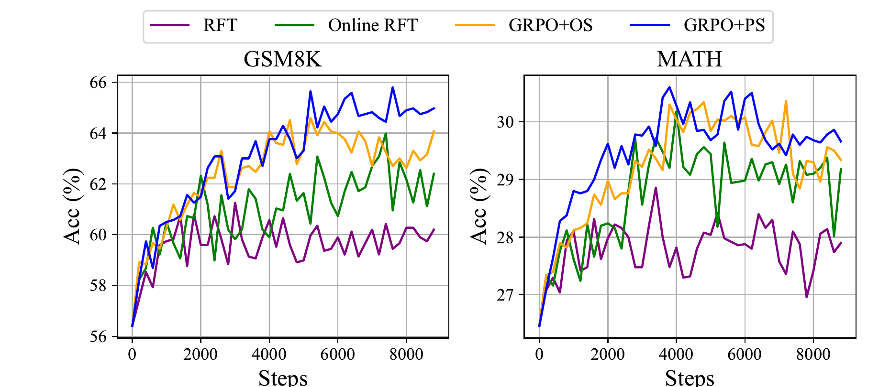
Early in training the SFT model and the current policy are nearly identical, so online sampling barely matters yet. As training progresses they diverge, and online methods pull ahead — Online RFT clearly beats offline RFT on both benchmarks.
Online RFT and GRPO share the same online data source — the only difference is the gradient coefficient. Online RFT's binary indicator reinforces every correct rollout equally, and does nothing for incorrect ones. GRPO's continuous advantage reinforces more strongly for above-average rollouts and actively penalizes below-average ones.
Figure 5 (previous slide) shows GRPO clearly ahead of Online RFT on both GSM8K and MATH — this gap is the direct payoff of the richer gradient coefficient. GRPO+PS (process supervision — one reward per reasoning step, not just the final answer) edges out GRPO+OS further, showing fine-grained credit assignment helps too.
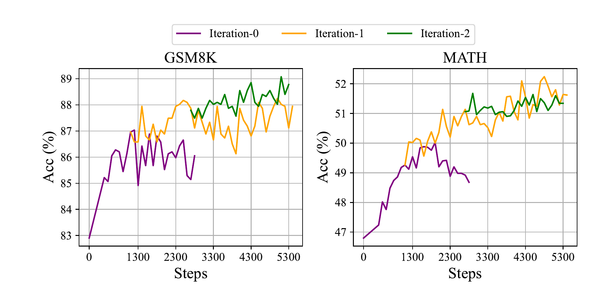
As the policy improves, the old reward model — trained on an earlier, weaker policy's outputs — starts to see rollouts unlike anything in its own training data, and its judgments grow less trustworthy. Iterative GRPO periodically retrains the reward model on fresh rollouts (keeping 10% older data via replay) and resets the reference policy, and training resumes. Iteration-1 shows the largest jump — the first update is where the reward model was staling fastest.
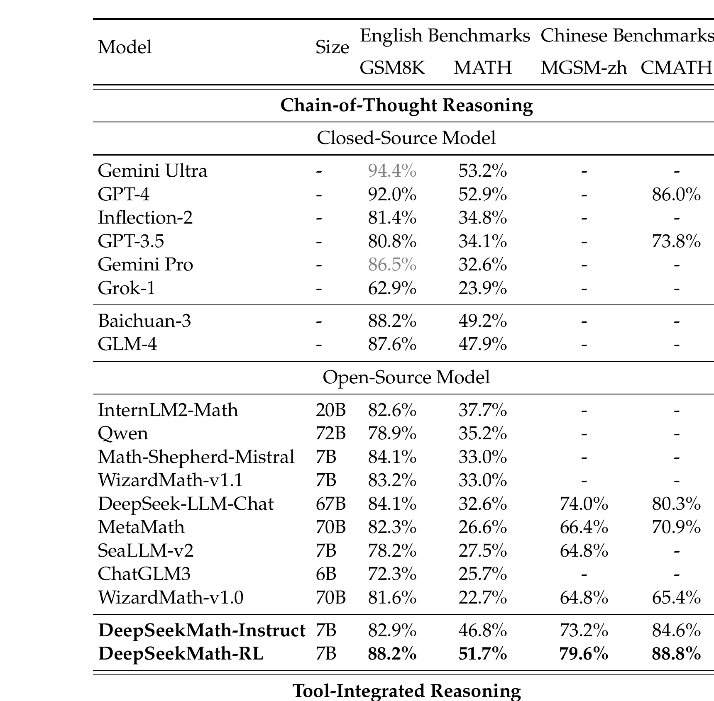
GRPO is applied to DeepSeekMath-Instruct using only the chain-of-thought instruction-tuning data for GSM8K and MATH — nothing new. Verified gains: GSM8K 82.9→88.2 (+5.3), MATH 46.8→51.7 (+4.9), CMATH 84.6→88.8 (+4.2) — CMATH is out-of-domain for the RL data, showing the improvement generalizes beyond exactly what was trained on.
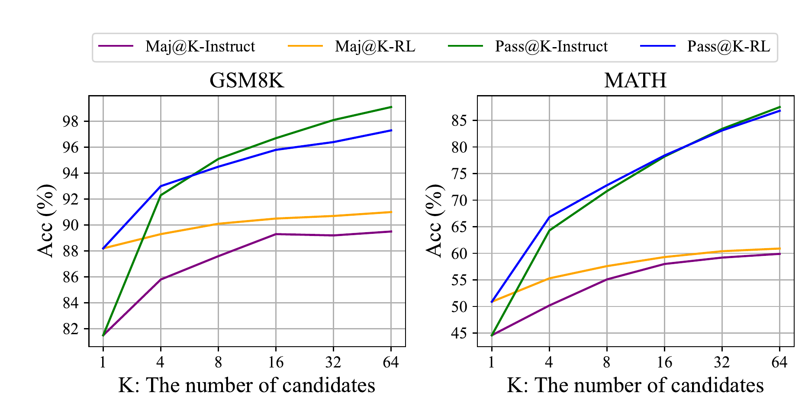
Pass@K = is a correct answer somewhere among $K$ samples? Maj@K = does the most common answer among $K$ samples happen to be correct? RL barely moves Pass@K — the model's underlying ability to ever produce a correct answer is basically unchanged. It substantially improves Maj@K.
RL isn't teaching new reasoning capability here — it's making the correct answer more likely to dominate the output distribution, so that simple top-of-distribution decoding surfaces it more often. A sharpening of what the model already knew, not necessarily new knowledge.
The paper closes by mapping its own limitations onto the three components of Equation 5:
Only in-distribution instruction-tuning questions were used, with naive sampling — likely why Pass@K didn't move. Out-of-distribution prompts and better decoding (tree search) are flagged as next steps.
Every method here fully trusts its reward signal — but even carefully human-annotated process-reward data (PRM800K) has ~20% labeling errors. Algorithms robust to noisy rewards are an open problem.
Generalizing reward models to out-of-distribution outputs, quantifying their uncertainty, and building better process-level (step-by-step) reward models.